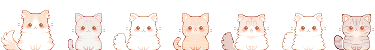

Web design has been something I’ve been interested in for a while, and the class I took on it in community college didn’t really spark my interest or give me the tools to further explore web design. That’s why I’m really glad I was able to take this class, because I found it really fun, especially how I was able to explore my own interests while creating websites, even when my interests are making tacky early 2000s style websites.
I honestly do think I’m going to continue creating websites after this class is done because I feel like I have the skills to do so and I just find it fun, like building a puzzle. Though there are things I feel like I could go back and improve upon, I’m satisfied with the work I did in this class because I feel that it reflects my interests and the skills I’ve learned both in this class and the other design classes I’ve taken. The class changed the way I view websites because I’ve found the process of making one very rewarding and I think it’s a skill that more people should learn.